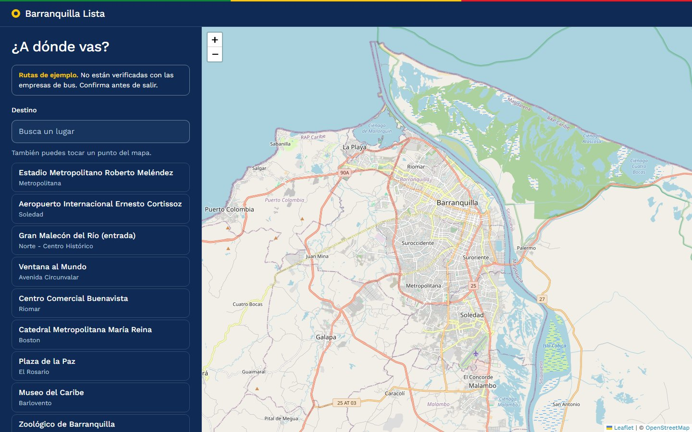
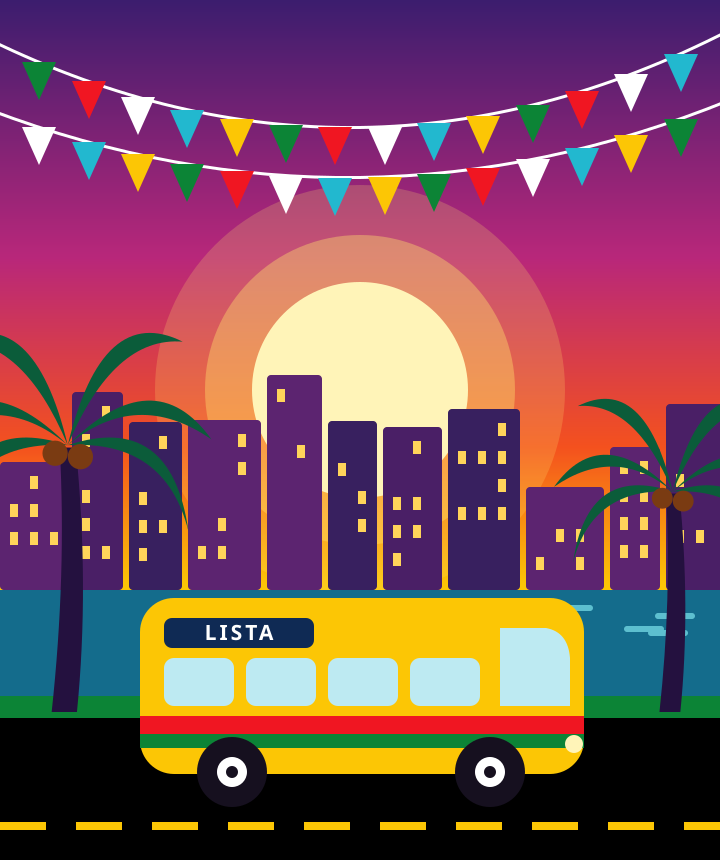

Muévete por Barranquilla
Elige a dónde vas, indica desde dónde sales y mira qué bus te sirve.
Rutas de ejemplo. No están verificadas con las empresas de bus. Confirma antes de salir.


Así funciona
Tres pasos para saber qué bus tomar, sin transbordos.
Elige tu destino
Busca un lugar conocido o toca un punto del mapa.
Indica tu salida
Usa tu ubicación o escoge un lugar de la lista.
Mira qué bus te sirve
Verás las rutas y cuánto toca caminar.


Lo que puedes usar
-
Mapa de rutas
Compara rutas de bus hacia lugares conocidos y mira la accesibilidad del destino cuando hay datos.
-
Punto Lista
Un punto en la parada que escucha lo que pasa en la ciudad. Aquí lo mostramos como idea.
Por qué importa
- Más de 5 °Cde diferencia de calor entre barrios pobres y ricos.
- 29,5 → 13,6 millonesde pasajes en Transmetro, de 2019 a 2025.
- 14.200 toneladasde residuos sacadas de arroyos y caños en 2026.
Fuentes y advertencias en el diagnóstico completo.
Preguntas frecuentes
¿Las rutas son oficiales?
No. Son datos de ejemplo, sin verificar con las empresas. Vienen del Área Metropolitana de Barranquilla (87 recorridos de buses) y de OpenStreetMap (4 de Transmetro). Confirma antes de salir.
¿Cómo se elige qué bus me sirve?
Se sugiere una ruta si hay dónde subir y bajar a menos de 800 m de tu salida y de tu destino, siguiendo el sentido del recorrido. Primero salen las que piden menos caminata. No hay transbordos.
¿Puedo saber si un lugar es accesible?
Para seis destinos hay datos de fichas de TUR4all. No son una auditoría del equipo ni una certificación oficial, y si un lugar no tiene datos, no se muestra nada.
¿Qué es Punto Lista?
Es una propuesta: un dispositivo con inteligencia artificial, micrófono, parlante y pantalla, donde cualquier persona pueda preguntar cómo llegar y recibir la respuesta hablada y escrita.
¿Puedo usar mi ubicación?
Sí, si das permiso al navegador. Si no, elige tu salida en la lista de lugares.
Barranquilla 2034
Una propuesta de ciudad para antes y después del Mundial: la ruta por etapas, lo que debería quedar y cómo participar. Es un escenario ficticio de prospectiva.
Escuela de ciudad: Generación 2034
Cursos cortos y gratuitos para que niños, jóvenes y adultos conozcan los problemas de Barranquilla y sepan qué hacer. Son una propuesta: todavía no hay inscripciones.
Participa
¿Qué le falta a Barranquilla Lista? Escríbelo en GitHub (pide una cuenta).